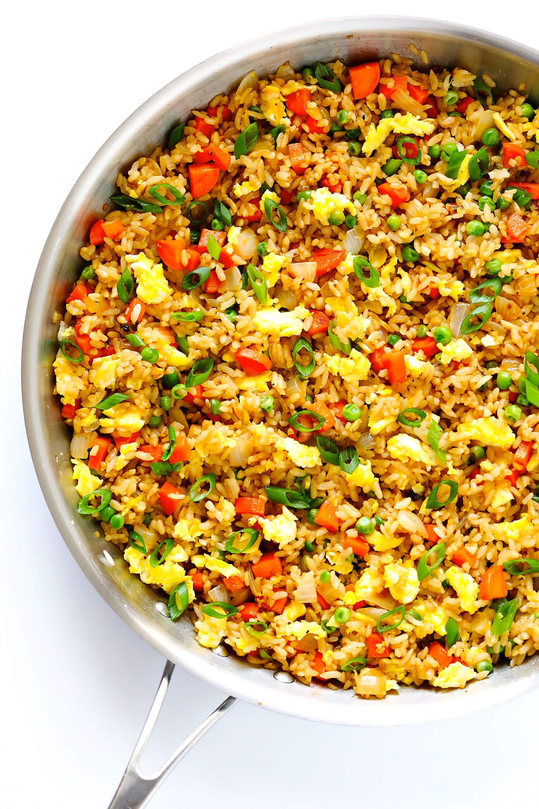

Perfectly Fried Rice

Authentic Fried Rice
A beautiful dish filled with
Egg,vegetables, and rice, that
can add any protine you could
desire.
- Cooked, Chilled, Rice
- Eggs
- Garlic
- Carrots, Onions, Green onios and peas
- Soy Sauce
- Oyster Sauce
- Toasted Sesame Oil
- Butter
Perfectly Prepared Fired Rice
- Using a small pat of butter,
Scramble some eggs in a large
saute pan, breaking them into
small pieces as you go. Then
transfe the eggs to a separate
plate and set aside.
- Saute your vegies and garlic
- Stir Fry the rice with the sauted veggies
butter, soy sauce, oyster sauce, until
the veggies start to brown.
- Remove the pan from heat and stir in
your green onion
- Season to taste with salt, pepper, and
any other spices you wish
- Add in any cooked protin of your choice
and serve